폐기물 감량
가연성 폐기물을 고온에서 연소해 부피와 무게를 줄이고, 남은 소각재는 별도의 기준에 따라 처리합니다.
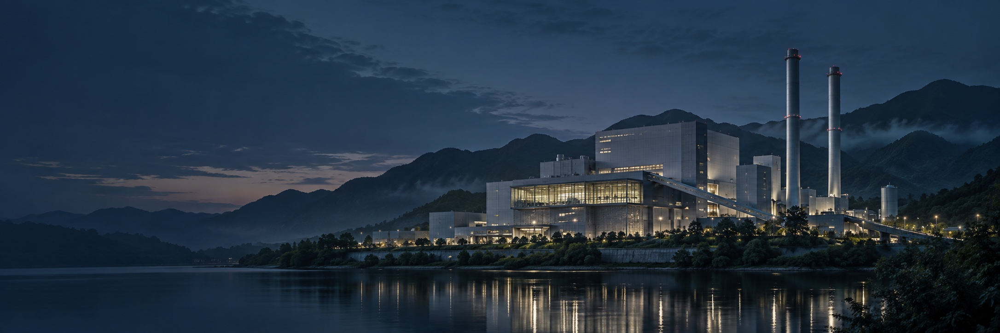
폐기물은 시설 안에서
어떤 과정을 거칠까요?
반입부터 소각재 처리까지,
보이지 않던 내부의 흐름을 따라갑니다.
E.FACT / CHAPTER 01
SCROLL TO FOLLOW THE PROCESS ↓
폐기물 감량, 고온 연소와 열 회수, 배출물질 관리 순서로 핵심 내용을 확인할 수 있습니다.
한 번 더 내려 핵심 정보를 살펴보세요 ↓
소각장은 폐기물을 고온으로 처리해
부피를 줄이고 에너지를 회수하는 시설입니다.
가연성 폐기물을 고온에서 연소해 부피와 무게를 줄이고, 남은 소각재는 별도의 기준에 따라 처리합니다.

폐기물은 일반적으로 약 850~1,100℃에서 연소되며, 이때 발생한 열은 전기나 난방 에너지로 활용할 수 있습니다.
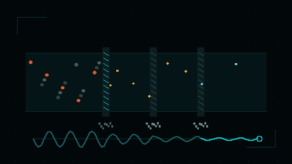
연소 과정에서 대기오염물질과 소각재가 발생할 수 있어, 방지시설 운영과 배출농도 감시가 지속적으로 필요합니다.
SEARCH THE ARCHIVE
검색어 또는 추천 키워드로 소각시설 정보를 탐색하세요.
DECODE 01
소각은 폐기물을 고온에서 연소시켜 부피와 무게를 줄이는 폐기물 처리 방법입니다. 연소 과정에서 발생하는 배출가스와 소각재는 관련 법령에 따라 적절하게 처리·관리해야 합니다.
연소 과정에서 발생한 열은 전기 생산이나 지역난방 등의 에너지원으로 활용할 수 있지만, 배출가스와 소각재를 안전하게 처리하기 위한 철저한 관리가 필요합니다.
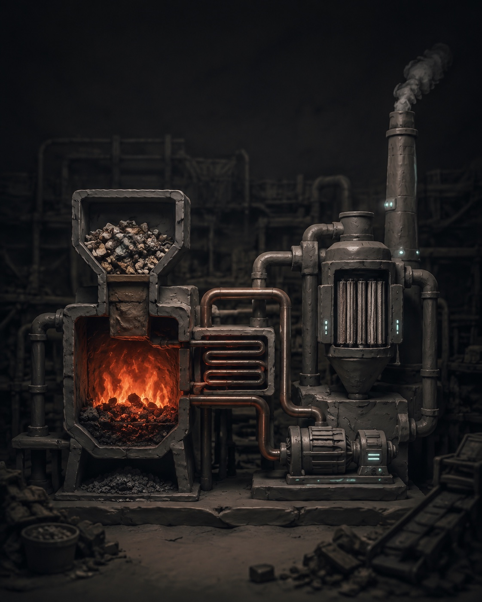
TODAY'S DECODE
소각과 폐기물 처리에 관한 핵심 정보를 짧고 쉽게 확인할 수 있습니다.
DECODE FACT
음식물 쓰레기는 수분 함량이 높아 소각로 내부 온도를 떨어뜨리고 연소 효율을 낮출 수 있습니다.
올바른 분리배출은 소각 효율과 에너지 회수율을 높이는 중요한 실천입니다.
ENERGY FACT
폐기물을 연소할 때 발생하는 열로 증기를 만들고, 이를 활용해 전기를 생산할 수 있습니다.
일부 시설에서는 지역난방이나 시설 운영 에너지로 재활용합니다.
EMISSION FACT
소각 과정에서 발생하는 배출가스는 집진, 세정, 탈질 등의 시설을 거쳐 오염물질을 줄입니다.
처리시설의 성능뿐 아니라 지속적인 측정과 정보 공개도 중요합니다.
FUTURE FACT
친환경 소각기술과 탄소 포집, 고효율 에너지 회수 기술이 지속적으로 연구되고 있습니다.
그러나 기술 발전과 함께 폐기물 자체를 줄이는 노력도 필요합니다.
E.FACT ARCHIVE / CHAPTER 01
하나의 시설에서, 지역의 질문으로.
청주와 북이면 일원에 쌓인 1999–2023년의 기록을 따라갑니다.
01 — THE BEGINNING
우진환경개발이 북이면 일원에서 하루 15톤 규모의 민간 소각시설 가동을 시작했습니다.
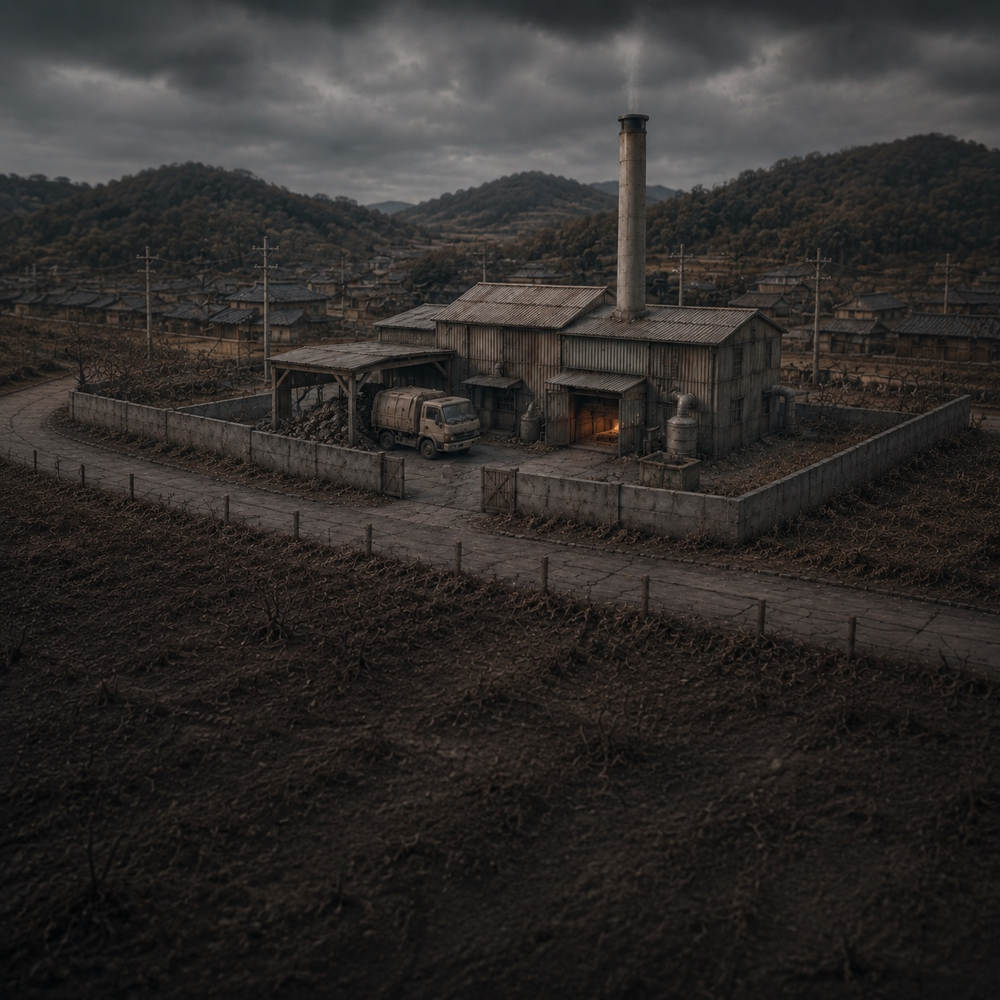
02 — ANOTHER FACILITY
진주산업이 하루 12톤 규모로 가동을 시작했습니다. 북이면 일원의 소각시설은 하나에서 둘로 늘었습니다.
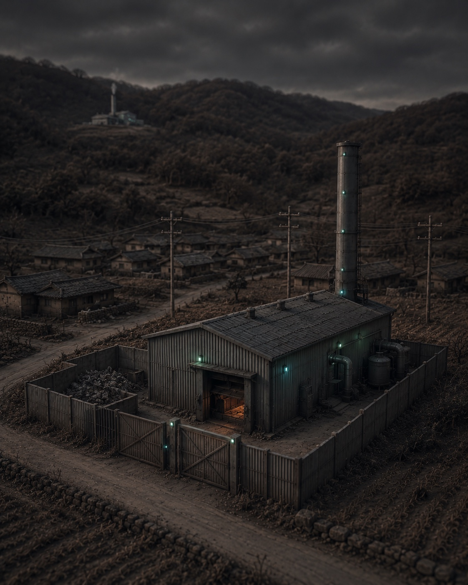
03 — PUBLIC INFRASTRUCTURE
2006년 9월 착공한 청주권광역소각시설이 2009년 준공됐습니다. 북이면 민간시설과는 별개의 휴암동 공공시설입니다.
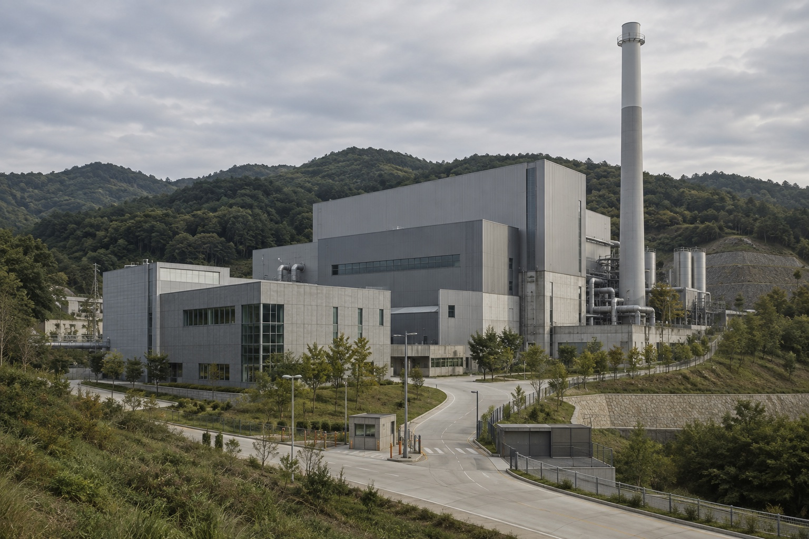
04 — GROWING CONCENTRATION
다나에너지솔루션이 가동하면서 북이면 일원에서 조사된 민간 소각시설은 세 업체로 늘었습니다.
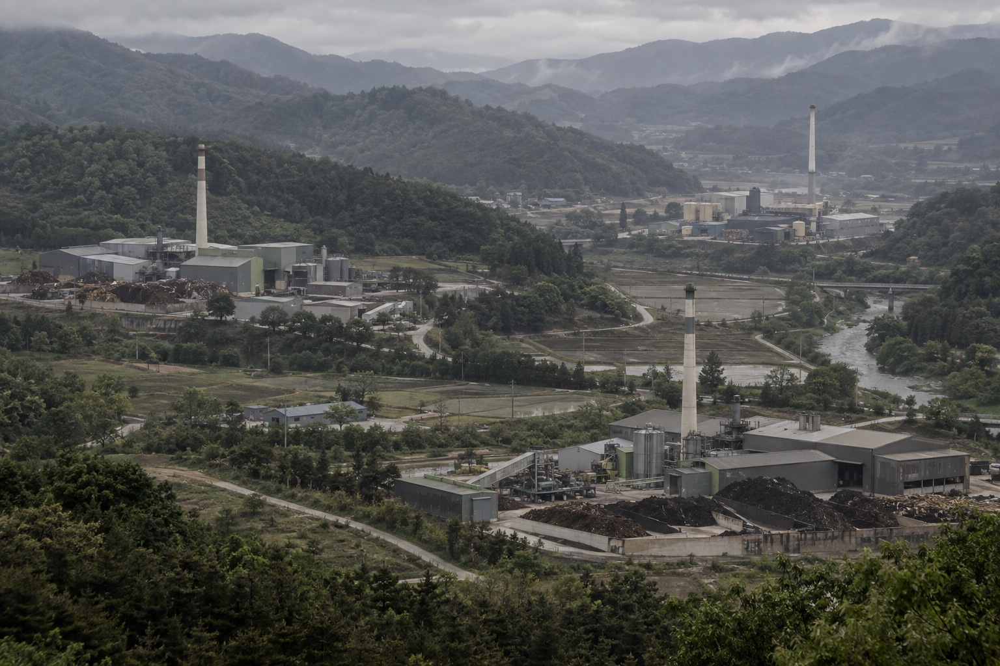
05 — PUBLIC CAPACITY
청주권광역소각시설 2호기가 들어섰습니다. 휴암동 공공시설은 1·2호기를 합쳐 하루 400톤 규모가 됐습니다.
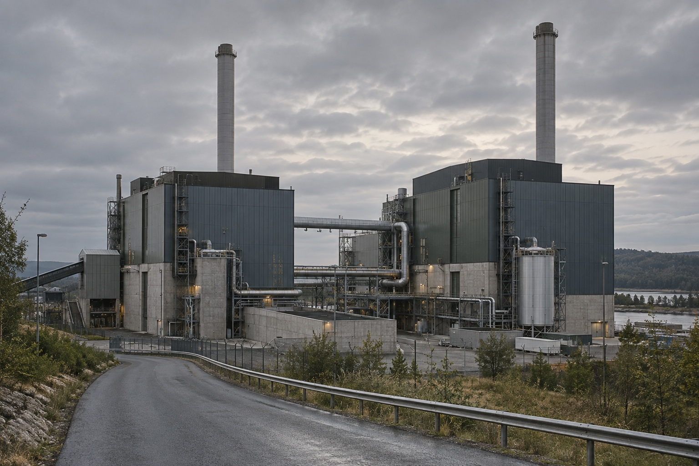
06 — THE SCALE OF CHANGE
북이면 일원 세 업체의 총 소각용량은 1999년과 비교해 약 36배로 커졌습니다.
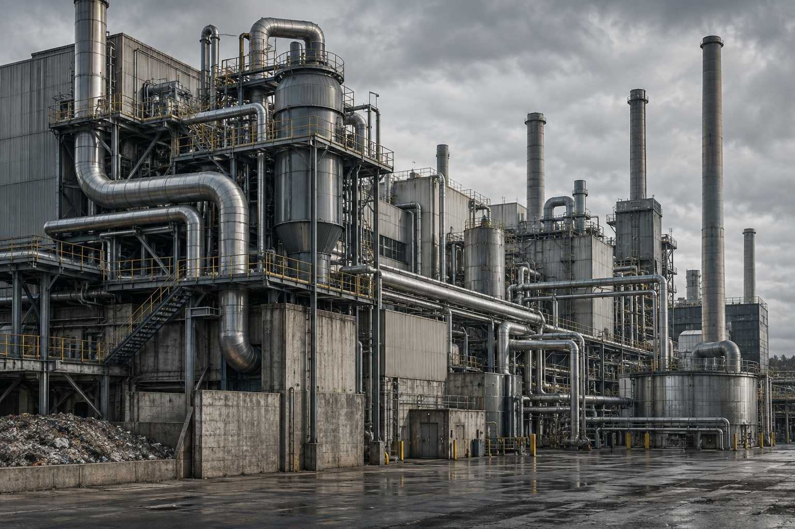
07 — ADMINISTRATIVE ACTION
청주시는 과다 소각과 변경허가 문제를 이유로 클렌코의 영업허가를 취소했습니다. 업체는 행정소송을 제기했습니다.
08 — VOICES OF RESIDENTS
4월 주민들이 건강영향조사를 청원했고, 8월 환경보건위원회가 이를 수용했습니다. 생활의 우려가 조사 의제로 이어졌습니다.
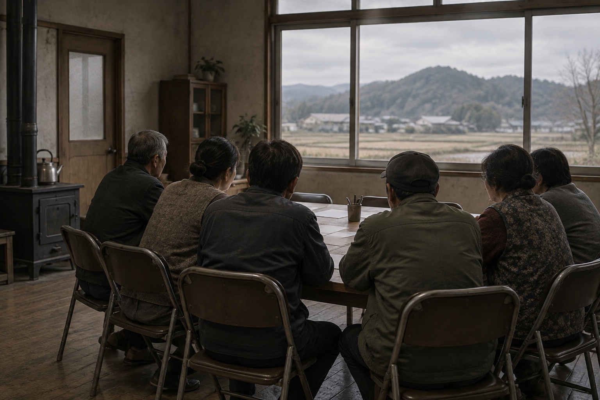
09 — PARALLEL QUESTIONS
북이면에서는 건강영향조사가 진행됐습니다. 오창 후기리에서는 소각시설 환경영향평가에 대한 조건부 동의가 나왔습니다.
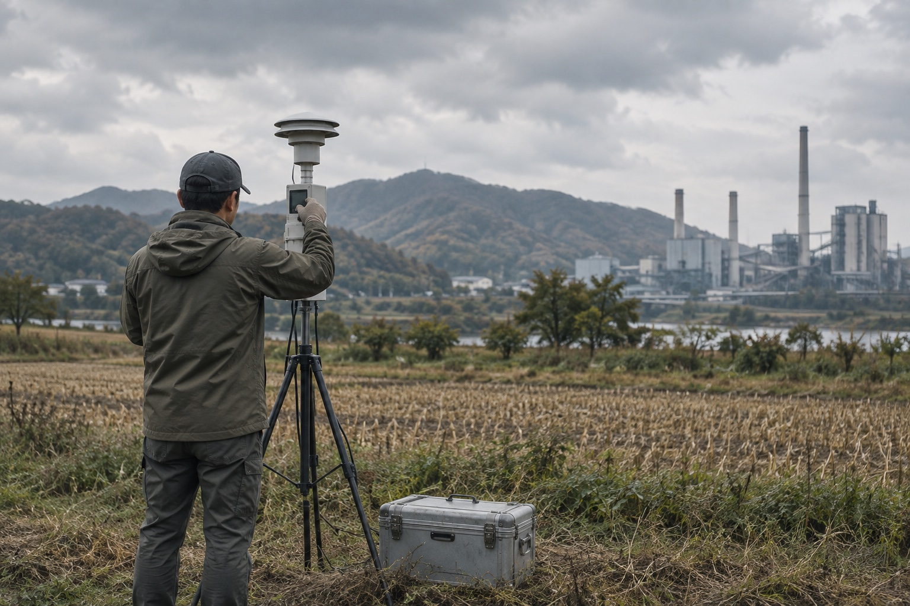
10 — READING THE EVIDENCE
일부 생체 지표는 높게 나타났지만, 환경부는 소각시설과 암 발생의 역학적 관련성을 확인할 과학적 근거가 제한적이라고 밝혔습니다.
11 — A LONGER OBSERVATION
2021년에 발표된 5년간의 추가보완조사 계획은 2022년을 포함합니다. 조사 범위와 주민 참여도 중요한 과제로 남았습니다.
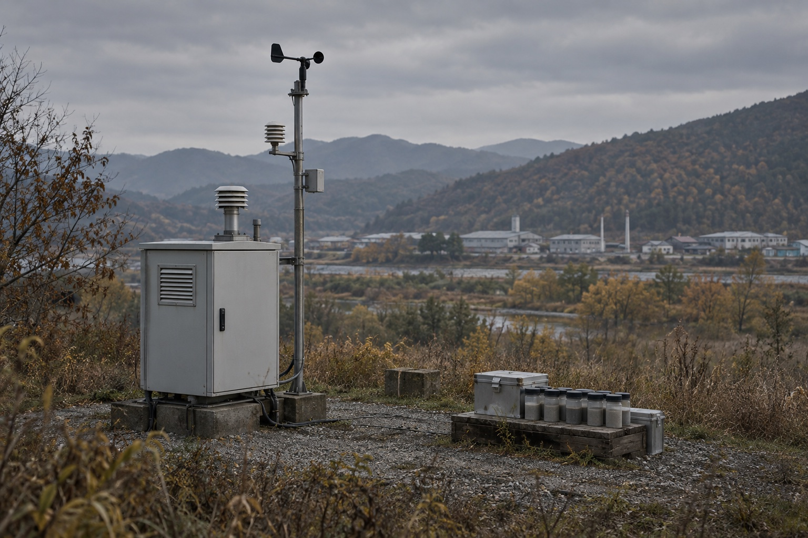
12 — A CHANGING OWNERSHIP
두 번째 허가취소 처분을 둘러싼 소송은 업체 승소로 확정됐습니다. 같은 해 SK에코플랜트의 클렌코 인수가 마무리됐습니다.
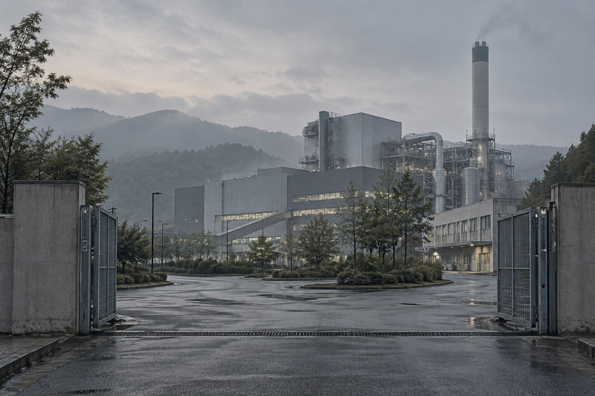
BEYOND THE FACILITY
처리 규모가 늘어난 시간만큼, 관리와 정보 공개에 대한 질문도 쌓였습니다. 기록은 시설의 변화와 주민의 삶을 함께 바라보는 출발점입니다.
처음부터 다시 보기 ↑기존 E.FACT Chapter1의 12개 연혁을 토대로 문장을 재구성하고 아래 자료와 대조했습니다. 범위는 1999–2023년이며, 현재 시설 현황을 뜻하지 않습니다. 공공시설과 민간시설의 규모는 별도로 표시했습니다. 시설용량은 실제 처리량 또는 배출량과 다릅니다.
자료 확인: 2026.09.26 · 환경부 발표는 한국환경산업협회에 게시된 발표문으로도 대조했습니다.